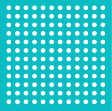

<mat-toolbar>
    <span class="logo-container" fxLayoutAlign="start"> 
        
    </span>
    <router-outlet></router-outlet>
</mat-toolbar>

<mat-sidenav-container autosize>
    <mat-sidenav #sidenav mode="side" opened disableClose role="navigation">
        <router-outlet name="sidenavNavigatie"></router-outlet>
    </mat-sidenav>
    <mat-sidenav-content role="main">
        <!-- <router-outlet name="sidenavInhoud"></router-outlet> -->
        <!-- <svg id="MySvgID" width="100%" height="100%"> </svg> -->
        <!-- <svg id="MySvgID" width='100%' height='100%'></svg> -->
        <input perzonId>
        <button (click)='getFamily($perzonId)'>Test</button>
        <div>
            {{persons.data.FatherId}}
        </div>
        <div>
            {{persons.data.Father}}
        </div>

    </mat-sidenav-content>
</mat-sidenav-container>